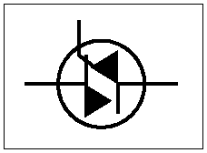

|

|
The triode AC switch (TRIAC) is a power-switching device as is the SCR.
The TRIAC conducts currents in both directions while the SCR allows current in only one direction. A common application is for lighting controllers. In response to a trigger, the triac conducts until the AC voltage applied reaches zero, then blocks flow until the next trigger occurs. Since a trigger can cause it to trigger current in either direction, it is an efficient power controller from essentially zero to full power.
|